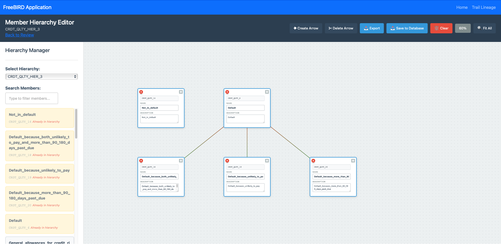

Member Hierarchy Editor User Guide
Overview
The Member Hierarchy Editor is a visual tool within the FreeBIRD Application designed for creating, managing, and visualizing hierarchical relationships between data members. This interface provides an intuitive drag-and-drop environment for building complex parent-child relationships and organizational structures within your data taxonomy.

Interface Components
Header Section
Navigation Bar
- FreeBIRD Application: Application title in the top-left corner
- Home: Quick navigation to return to the main dashboard
- Trail Lineage: Access to data lineage and audit trail features
Status Indicator
- Displays current hierarchy being edited (e.g.,
CRDTQLTYHIER_3) - Back to Review: Link to return to the review screen
Control Panel
Action Buttons (Top Right)
- Create Arrow (White icon): Establishes parent-child relationships between nodes
- Delete Arrow (White icon): Removes existing relationships between nodes
- Export (Blue): Exports the hierarchy structure to external formats
- Save to Database (Blue): Persists the current hierarchy to the database
- Clear (Red): Resets the workspace and removes all unsaved changes
- 60% (Gray): Progress indicator showing completion status
- Fit All (White): Adjusts zoom to display the entire hierarchy in view
Left Panel - Hierarchy Manager
Hierarchy Selection
- Select Hierarchy: Dropdown menu to choose from available hierarchies
- Displays currently selected hierarchy (e.g.,
CRDTQLTYHIER_3) - Provides quick access to switch between different hierarchy structures
Member Search
- Search Members: Text input field with placeholder "Type to filter members..."
- Real-time filtering of available members
- Helps locate specific members in large datasets
Member List
The left panel displays available members organized by status:
Not in Hierarchy
- Orange indicator: Members available but not yet added to the hierarchy
- Shows member codes and descriptions
- Example:
CRDT\QLTY\14 Already in hierarchy
Default Members
- Yellow highlighting: Pre-defined default members
- Cannot be removed from the hierarchy
- Examples:
Default\because\both\unlikely\to\pay\and\more\than\90\180\days\past\_dueDefault\because\unlikely\to\payDefault\because\more\than\90\180\days\past\dueDefault
Visual Hierarchy Canvas

Node Structure
Each node in the hierarchy contains:
- Red pin icon: Visual indicator for the node
- Node name: Primary identifier (e.g.,
rootgcm4) - NAME field: Display name or label
- DESCRIPTION field: Detailed description of the member
- Additional metadata fields as configured
Hierarchy Visualization
The canvas displays the hierarchical structure with:
- Parent nodes at higher levels
- Child nodes connected below with relationship lines
- Visual connectors showing parent-child relationships
- Interactive nodes that can be selected and modified
Key Functions
Creating a New Hierarchy
- Select "Choose a hierarchy..." from the dropdown
- Click on empty option to start a new hierarchy
- Begin adding members from the left panel
Adding Members to Hierarchy
- Search or browse for members in the left panel
- Drag the member from the left panel
- Drop it onto the canvas workspace
- The member will appear as a node with editable fields
Creating Relationships
- Click Create Arrow button to enter relationship mode
- Click on the parent node
- Drag to the child node
- Release to create the relationship
- A connecting line will appear between the nodes
Deleting Relationships
- Click Delete Arrow button to enter deletion mode
- Click on the relationship line you want to remove
- The connection will be deleted immediately
- Exit deletion mode by clicking another tool
Editing Node Information
- Click on any node to select it
- Edit fields directly within the node:
- Update NAME field
- Modify DESCRIPTION
- Edit any custom metadata fields
- Changes are saved automatically to the workspace
Navigating the Canvas
- Pan: Click and drag on empty canvas space to move the view
- Zoom: Use mouse wheel or zoom controls
- Fit All: Click the Fit All button to see the entire hierarchy
- Select: Click on nodes to select them for editing
Searching for Members
- Click in the Search Members field
- Type part of the member name or code
- The list filters in real-time
- Select from filtered results
Saving Your Work
- Complete your hierarchy modifications
- Click Save to Database button
- Confirm the save operation if prompted
- Wait for confirmation message
Exporting Hierarchies
- Click Export button
- Select export format from options
- Choose destination for the file
- The hierarchy will be exported with all relationships intact
Working with Complex Hierarchies
Best Practices for Large Hierarchies
- Start from the top: Build from root nodes downward
- Group related items: Keep similar members close together
- Use consistent naming: Maintain naming conventions across levels
- Regular saves: Save to database frequently to prevent data loss
Managing Multiple Levels
- Create clear parent-child relationships
- Avoid circular dependencies
- Maintain consistent depth where possible
- Use descriptions to clarify complex relationships
Visual Indicators
Node States
- Orange text: Members not yet in hierarchy
- Yellow background: Default members
- Red pin icon: Active node marker
- Connected lines: Established relationships
Progress Tracking
- The 60% indicator shows overall completion
- Helps track progress on large hierarchy projects
- Updates as you add members and relationships
Tips for Efficient Usage
- Use search extensively: Quickly find members instead of scrolling
- Keyboard shortcuts: Learn available shortcuts for faster editing
- Batch operations: Select multiple nodes for group actions
- Visual organization: Arrange nodes logically for better readability
- Regular exports: Create backups through the export function
Troubleshooting
Common Issues and Solutions
- Nodes not connecting: Ensure Create Arrow mode is active
- Cannot delete relationship: Activate Delete Arrow mode first
- Members not appearing: Check if already in hierarchy (orange text)
- Save fails: Verify database connectivity and permissions
- Canvas performance: Use Fit All to reset view if navigation becomes sluggish
Data Validation
- The system prevents circular relationships
- Default members cannot be removed
- Duplicate members are automatically detected
- Invalid relationships are highlighted
Advanced Features
Filtering and Views
- Filter members by type or category
- Show/hide different relationship types
- Adjust visual layout for presentation
Collaboration
- Multiple users can work on different hierarchies
- Changes are tracked in the trail lineage
- Export function enables sharing with stakeholders